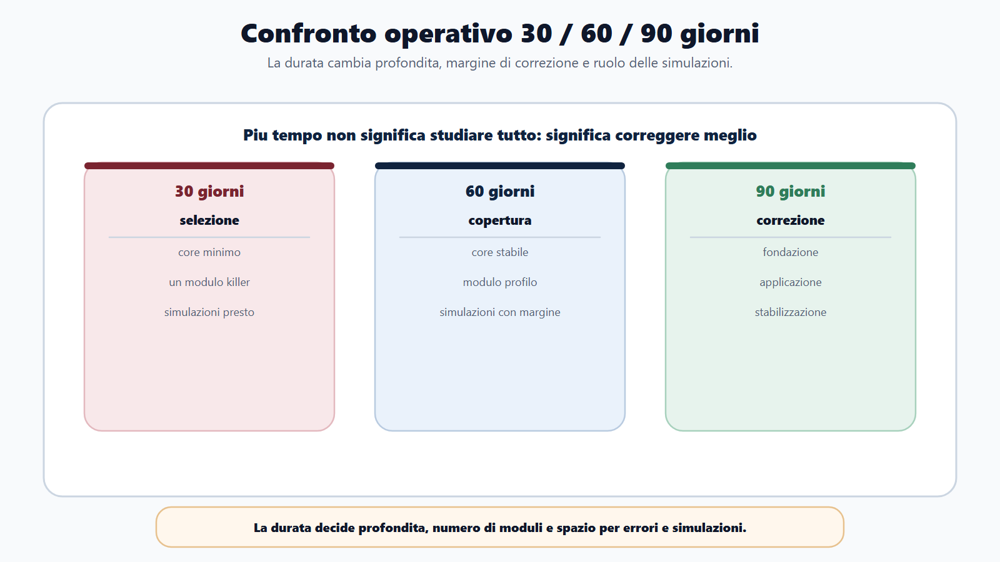
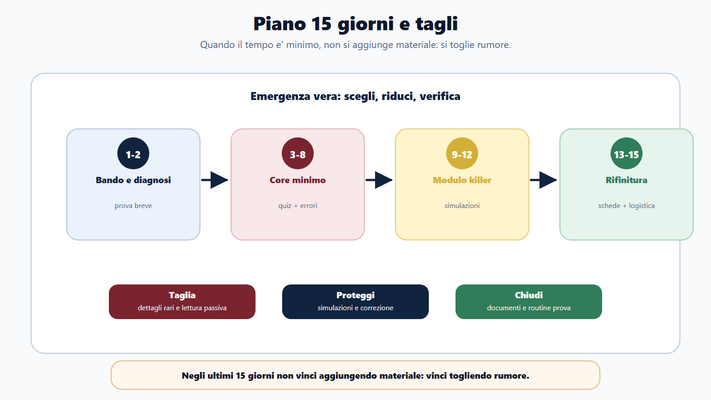
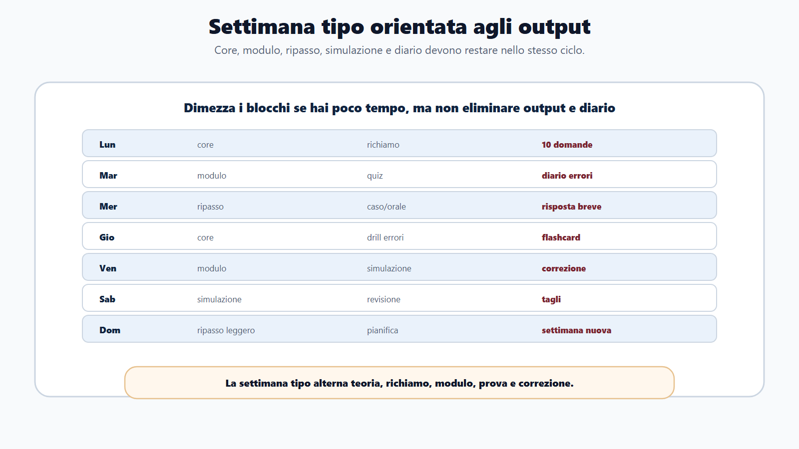
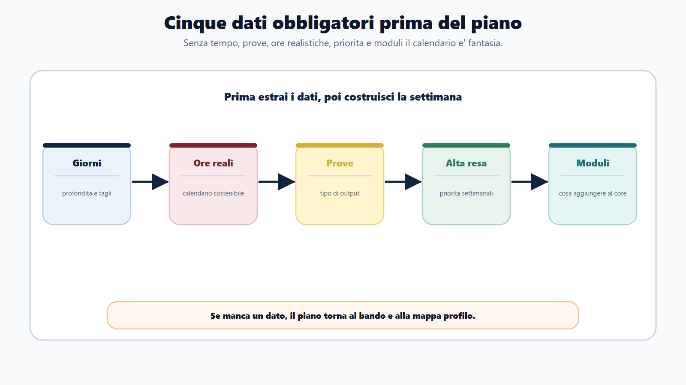
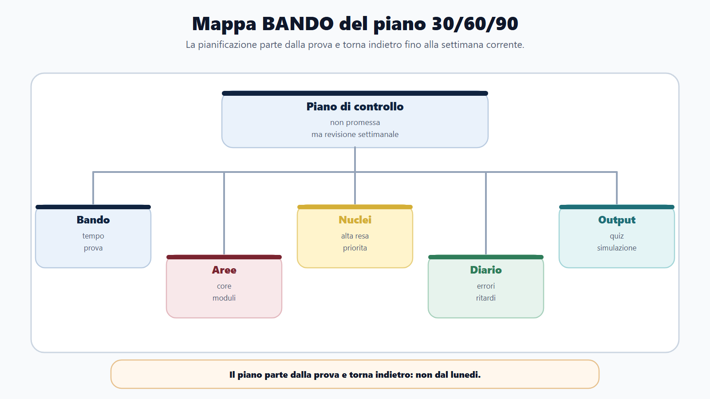
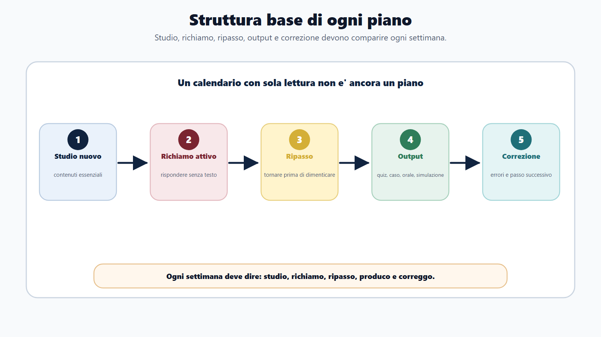

VOL-01 · Capitolo 22
Parte IV · Adattare il metodo
Piano 30/60/90
giorni
Un piano di studio aiuta a prendere decisioni quando il tempo è meno del programma, non a riempire caselle. Il calendario è un sistema di controllo, non una promessa. Deve funzionare quando arriva il ritardo.
Schema
Confronto 30 60 90 giorni

Schema
Piano 15 giorni e tagli

Schema
Settimana tipo output

Schema
Cinque dati obbligatori

Schema
Mappa bando del piano

Schema
Struttura base ogni piano

01 · Perché i calendari si rompono
Ore ideali, pagine senza output, recuperi infiniti
Molti candidati costruiscono calendari irrealistici: dieci materie al giorno, pagine da leggere senza output, ripassi rimandati all’ultima settimana. Il piano si rompe, il candidato si sente in ritardo e prova a compensare aggiungendo ore, manuali e ansia. Il piano non deve essere bello da vedere. Deve funzionare.
| Dato obbligatorio | Perché senza di esso non pianifichi |
|---|---|
| Giorni disponibili | Determina profondità e tagli. Trenta, sessanta o novanta non sono lo stesso metodo. |
| Ore realistiche settimanali | Evita piani impossibili. Pianificare su ore ideali è il primo errore tipico. |
| Prove previste | Decide il tipo di output: quiz, scritto, caso, orale. |
| Materie ad alta resa | Decide le priorità. Senza di esse ogni capitolo sembra obbligatorio. |
| Moduli integrativi | Decide che cosa aggiungere al core, e con quale limite. |
Confondere «giorno occupato» con «giorno produttivo». Senza output e diario, il calendario è solo occupazione.
02 · BANDO
Non parte dal lunedì: parte dalla prova
Ogni settimana deve dire che cosa studi, che cosa richiami, che cosa produci e che cosa correggi. Se un calendario contiene solo «leggere capitolo X», non è ancora un piano.
| Domanda | Azione | Se la salti | |
|---|---|---|---|
| B — Bando | Quanto tempo ho e che prova devo sostenere? | Scheda concorso. | Costruisci un orario staccato da soglie e formato. |
| A — Aree | Quali blocchi devo coprire? | Mappa core + moduli. | Dieci materie al giorno, nessuna gerarchia. |
| N — Nuclei | Quali argomenti hanno resa più alta? | Priorità settimanali. | Il ripasso resta all’ultima settimana. |
| D — Diario | Dove sto sbagliando o rallentando? | Correzione del piano. | Il piano resta rigido e si rompe. |
| O — Output | Che cosa devo produrre ogni settimana? | Quiz, caso, orale, simulazione. | Scopri troppo tardi errori di tempo e formato. |
Ogni settimana deve dire che cosa studi, che cosa richiami, che cosa produci e che cosa correggi.
Trenta giorni: niente dispersione. Sessanta: alternanza. Novanta: cicli, non un altro manuale. Quindici: togliere rumore. Il tempo in più non è un alibi per accumulare fonti.
03 · Cinque blocchi
Ogni piano, breve o lungo
Se lavori o hai poco tempo, dimezza i blocchi: non eliminare output e diario. Non lasciare giorni di recupero è un errore: il ritardo arriverà.
Studio nuovo
Acquisire contenuti essenziali. Blocchi brevi, non capitoli interminabili.
Richiamo
Rispondere senza guardare il testo. Costruisce memoria, non solo la misura.
Ripasso distribuito
Tornare prima di dimenticare. Non lasciarlo all’ultima settimana.
Output e correzione
Quiz, scritto, caso, orale, simulazione. Poi classificare errori e decidere il passo successivo.
04 · Trenta giorni
Emergenza ordinata, non perfezione
Che cosa devo sapere e saper fare per non arrivare disarmato? Non permette enciclopedia. Permette selezione. Non tagliare bando, soglie, nucleo, modulo killer, simulazioni, correzione errori.
| Settimana | Obiettivo | Output |
|---|---|---|
| 1 · Impostazione | Bando, allegati, scheda, materie ad alta resa, un solo modulo principale, mini-simulazione diagnostica. | Scheda, mappa core + modulo, venti nuclei, primi errori. |
| 2 · Copertura | Nuclei essenziali, domande, quiz o risposte brevi, flashcard solo dagli errori. | Tre blocchi quiz o tre risposte, venti flashcard, tabella errori. |
| 3 · Modulo e prova | Modulo decisivo, collegamenti con il core, formato reale, tempi e strategia. | Una simulazione completa o due mezze; caso o orale se previsto; lista tagli. |
| 4 · Rifinitura | Errori, nuclei deboli ad alta resa, simulazioni, documenti e logistica. | Due simulazioni, schede finali, diario ripulito, piano ultime 48 ore. |
Dettagli specialistici non richiesti, manuali doppi, lettura senza quiz, schemi decorativi, argomenti rari se il core non è stabile. Non tagliare le simulazioni per «leggere di più».
05 · Sessanta giorni
Il più comune: copertura e consolidamento
Permette nucleo, modulo e simulazioni con margine di correzione. Negli ultimi cinque giorni non si apre un nuovo manuale. Si chiude. Quali materie producono più punti o più rischio?
| Fase | Giorni | Prodotti |
|---|---|---|
| Impostazione | 1–10 | Scheda bando, mappa profilo, scelta moduli, calendario, prova diagnostica. |
| Core | 11–30 | Amministrativo essenziale, impiego, trasparenza, anticorruzione, privacy; informatica e inglese se previsti; quiz su ogni blocco. Studio breve, richiamo, diario, ripasso dopo due-tre giorni. |
| Modulo profilo | 31–45 | Modulo principale, collegamenti con il core, casi o quiz specialistici, orale su profilo. Non studiare il modulo come se fosse separato. |
| Simulazioni | 46–55 | Complete, correzione ragionata, errori ricorrenti, tagli. Scopri dove perdi tempo, quali domande leggi male, quali concetti confondi, quale materia crolla sotto pressione. |
| Rifinitura | 56–60 | Ripasso errori, schede, documenti, routine prova, piano ultimo giorno. |
06 · Novanta giorni
Studiare meglio, non studiare tutto
Il vantaggio è la correzione: hai tempo per sbagliare, classificare e migliorare. Non è un alibi per accumulare fonti.
Fondazione
Decodifica, nucleo, metodo, prove a bassa intensità, diario. Ogni settimana: due blocchi quiz, una risposta orale breve, uno schema, una revisione del diario.
Moduli e applicazione
Modulo principale, secondario solo se serve, casi o scritti, inglese e informatica se previsti, simulazioni parziali. Ogni settimana: una parziale, un caso o risposta, un orale, correzione e flashcard.
Prova e stabilizzazione
Simulazioni complete, ripasso distribuito, riduzione errori, gestione tempo, rifinitura orale e documenti. Ogni settimana: una o due complete, correzione profonda, scheda tagli, piano ultimi sette giorni.
07 · Quindici giorni
Emergenza vera: togliere rumore
Se restano quindici giorni, non devi recuperare tutto. Devi scegliere. Negli ultimi quindici giorni non vinci aggiungendo materiale. Vinci togliendo rumore.
| Giorni | Che cosa fai | Che cosa non fai |
|---|---|---|
| 1–2 | Bando, scheda prova, materie ad alta resa, modulo killer, simulazione diagnostica breve. | Aprire un nuovo manuale. |
| 3–8 | Core minimo, quiz o domande mirate, flashcard dagli errori, ripasso ogni 48 ore. | Teoria a bassa resa. |
| 9–12 | Modulo principale, simulazioni, correzione tempi, orale breve se previsto. | Eliminare quiz per «leggere di più». |
| 13–15 | Errori ricorrenti, schede finali, documenti, sonno, logistica, routine. | Recuperare notti intere. |
08 · Settimana tipo
Adattala a 30, 60 o 90: non togliere l’output
La colonna «decisione» del calendario è obbligatoria. Ogni settimana decidi se continuare, tagliare, spostare tempo o cambiare metodo. Profilo amministrativo: priorità bando, amministrativo, impiego, trasparenza, informatica e inglese se previsti, quiz e orale. Ente locale: core, ordinamento, atti, contabilità se richiesta, servizi, casi. Ministero: costituzionale e amministrativo, impiego, organizzazione, settore se richiesto, orale ordinato.
| Giorno | Blocco 1 | Blocco 2 | Output |
|---|---|---|---|
| Lunedì | Studio core | Richiamo attivo | Dieci domande |
| Martedì | Modulo | Quiz mirato | Diario errori |
| Mercoledì | Ripasso core | Caso o orale | Risposta breve |
| Giovedì | Studio core | Drill errori | Flashcard |
| Venerdì / sabato | Modulo e simulazione | Revisione | Correzione, tagli, priorità |
| Domenica | Ripasso leggero | Pianificazione | Settimana nuova |
09 · Caso guidato
Luca, sessanta giorni, Comune
Ha studiato amministrativo, ma è debole su enti locali e contabilità. Il secondo piano sembra ordinato, ma non produce prova: trenta giorni di lettura, venti di ordinamento, dieci finali per tutto il resto.
Lettura a blocchi
Prima tutto l’amministrativo, poi tutto l’ordinamento, poi «il resto». Niente diagnostica, niente quiz durante, simulazioni schiacciate in coda. Il ritardo, quando arriva, non ha dove essere assorbito.
Ciclo di controllo
Giorni 1–10: bando, core, diagnostica. 11–25: amministrativo, accesso, impiego, trasparenza. 26–40: ordinamento, organi, atti, contabilità essenziale. 41–52: quiz e casi. 53–60: simulazioni, errori, orale, logistica.
10 · Verifica
Due domande da saper spiegare
Perché un piano di studio deve contenere simulazioni anche prima della fine del programma?
Perché la simulazione mostra se lo studio diventa output. Aspettare di «finire tutto» significa scoprire troppo tardi errori di tempo, lettura, memoria, strategia e formato. La simulazione misura il punteggio e, soprattutto, il processo.
Se sono in ritardo, devo eliminare quiz e simulazioni per leggere più teoria?
No. In ritardo devi ridurre teoria a bassa resa e aumentare verifica mirata. Senza quiz, casi o orale non sai che cosa stai davvero imparando. Il piano senza diario diventa rigido; il diario senza piano diventa confuso.
11 · Mini-esercizio
Se non sai che cosa tagliare, non hai un piano
Hai una lista. Compila per iscritto. La colonna decisione della settimana è il pezzo che manca ai calendari decorativi.
| Campo | Che cosa stai fissando |
|---|---|
| Giorni disponibili e ore realistiche a settimana | Profondità vera, non ideale. |
| Prova principale, core, modulo principale | Gerarchia, non elenco. |
| Output settimanale minimo | Quiz, caso, orale: senza questo il lunedì è solo lettura. |
| Giorno simulazione e giorno revisione diario | Controllo, non occupazione. |
| Che cosa taglio se resto indietro | La decisione che il ritardo ti chiederà comunque. |
12 · Da tenere ferme
Cinque regole, con il perché
1. Il piano parte dalla prova e torna indietro, perché un calendario staccato da formato e soglie si rompe alla prima settimana.
2. Ogni settimana deve produrre output, non solo lettura, perché «aver letto il capitolo» non misura la prestazione.
3. Il ripasso va distribuito, non lasciato all’ultima settimana, perché la memoria peggiora se aspetti di «finire tutto».
4. Il diario corregge il piano con dati reali, perché ore ideali e umore non dicono dove stai rallentando.
5. Se il tempo è poco, taglia contenuti a bassa resa, non simulazioni e correzione, perché in ritardo vince chi verifica, non chi accumula pagine.
Prossimo capitolo
Il diario degli errori
Dal calendario al cruscotto: l’errore è un dato. Dice dove il piano non sta funzionando e quale azione fare dopo, non solo quale risposta era giusta.